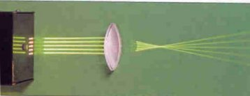
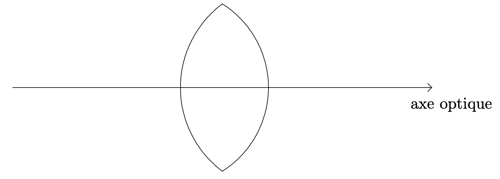

Lentille


Une lentille réfracte donc la lumière deux fois :
- à l’interface air - matériau (lorsque la lumière entre dans la lentille) ;
- à l’interface matériau - air (lorsque la lumière sort de la lentille).
En fonction de la forme de la surface de la lentille, la lumière est réfractée différemment.
Objet et image
Précisons la définition d’un objet et d’une image.
Point objet et objet
Deux situations sont à envisager :
- le point objet est à distance finie du système optique, les rayons incidents (ou leurs prolongements) se coupent.
- le point objet est très éloigné du système optique, il est dit à l’infini, les rayons incidents sont parallèles.
Point objet à distance finie et point objet à distance infinie.
Point image et image
Deux situations sont à envisager :
- le point image est à distance finie du système optique, les rayons émergents ou leurs prolongements se coupent.
- le point image est très éloigné du système optique , il est dit à l’infini : les rayons émergents sont parallèles.
Point objet à distance finie et point objet à distance infinie.
Le modèle des lentilles minces convergentes
Manipulations
Matériel : Une source lumineuse munie d’une grille, des lentilles convergentes de démonstration.
- Diriger les pinceaux lumineux parallèlement à l’axe de la lentille (figure ci-dessous).

- La lentille est dite convergente. Justifier ce qualificatif.
Réponse
Les rayons de lumière qui arrivent parallèlement les uns aux autres convergent au-delà de la lentille.
- Existe-t-il des lentilles qui ne sont pas convergentes ? Comment peut-on reconnaître les lentilles convergentes parmi toutes les lentilles ?
Réponse
-
Il existe des lentilles divergentes : les rayons de lumière qui arrivent parallèlement les uns aux autres divergent au-delà de la lentille.
-
Les lentilles convergentes possèdent un bord mince alors que les lentilles divergentes possèdent un bord épais.
- L’image ci-dessus permet de visualiser le foyer image $F'$ de la lentille. Donner la définition de ce point.
Réponse
- À l’aide d’une lentille auxilaire, créer un point objet pour la lentille étudiée et placer cette lentille de telle sorte que les rayons issus de ce point objet émergent de la lentille étudiée parallèlement à l’axe optique.
Quel nom porte ce point objet ?
Réponse
C’est le foyer objet $F$.
- Où se situe la lentille par rapport aux deux foyers ?
Réponse
La lentille se trouve au milieu du segment $[F, F’]$.
- Compléter le schéma en indiquant la position des deux foyers.

- Reprendre le dispositif de la figure ci-dessus et faire pivoter la lentille de façon à mettre en évidence l’existence d’un pinceau lumineux particulier qui n’est que très peu dévié. Par quel point particulier de la lentille passe ce pinceau lumineux ?
Réponse
Le pinceau lumineux passe par le centre de la lentille.
- Envisager le cas où l’épaisseur de la lentille est très faible et placer le point sur le schéma de la question 6.
Modélisation d’une lentille convergente
- Tout rayon passant par le centre optique : … n’est pas dévié
Réponse
Foyer objet et foyer image
- Le foyer objet est le point de l’axe, noté $F$, possédant la propriété suivante : …
Réponse
- Le foyer image est le point de l’axe, noté $F'$, possédant la propriété suivante : …
Réponse
- $F$ et $F'$ sont : …
Réponse
Distance focale et vergence
L’axe optique est orienté dans le sens de propagation de la lumière.
- La distance focale est notée $f'$ : $$f’ = \overline{\operatorname{OF}'}$$ L’unité de la distance focale est le mètre (m).
- La vergence est notée $C$ : $$C = \frac{1}{\overline{\operatorname{OF}'}} = \frac{1}{f’}$$ L’unité de la vergence est la dioptrie ($\delta$).
Détermination de la position et de la taille de l’image
Détermination graphique
Détermination analytique
Manipulation
- Détermination de la valeur approchée de la distance focale. Placer la
- lentille (tenue à la main) de manière à obtenir l’image d’un objet éloigné
- par exemple obtenir sur le sol, l’image donnée par la lentille d’une lampe du plafond.
- Où se forme l’image d’un objet situé à l’infini ?
Réponse
Dans le plan focal image.
- En déduire une valeur approchée de la distance focale.
Effectuer ainsi 6 à 8 mesures et rassembler les mesures dans un tableau.
Résultats :
| $\overline{OA}‘$ | $\overline{OA}$ |
|---|---|
| 0,885 | 1,12994350282 |
| 0,543 | 1,84162062615 |
| 0,43 | 2,32558139535 |
| 0,379 | 2,63852242744 |
| 0,34 | 2,94117647059 |
| 0,312 | 3,20512820513 |
| 0,295 | 3,38983050847 |